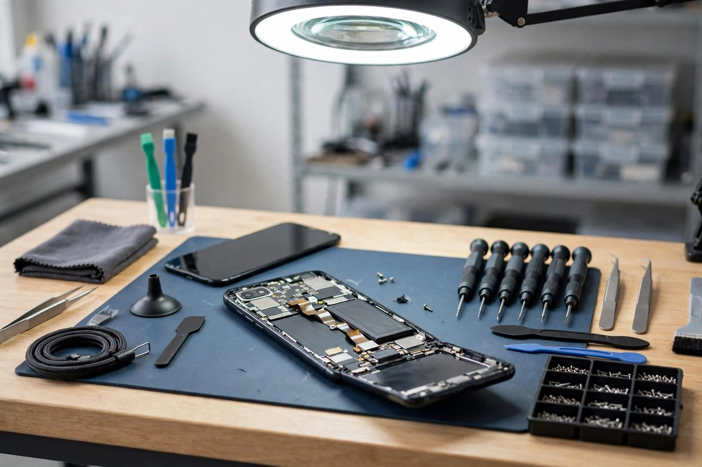

When to Visit a Repair Shop for Speaker Problems

Most speaker problems start small: a little muffling, a slightly lower volume, or a voice that sounds distant. Many of these issues are caused by dust and can be fixed at home. But some problems are signs of hardware damage, and no amount of brushing, compressed air, or sound-based cleaning will fix them. Knowing the difference saves you time, protects your phone from further damage, and helps you decide when a professional repair is the right move.
Try the Home Fixes First
Before booking a repair, it is worth ruling out the simple causes. Start by checking your volume and audio settings, restarting the phone, and making sure no Bluetooth device is connected and stealing the audio output. Then clean the speaker grille gently with a soft brush and run a sound sweep using our speaker cleaner tool. Test the result with a sound test and our volume test to see whether the speaker responds evenly at different levels.
If the sound improves noticeably, the problem was almost certainly dirt or a minor software glitch, and you are done. If nothing changes after two careful cleaning attempts, or if the sound gets worse, stop experimenting at home. Repeated forceful cleaning can push debris deeper, and opening the phone yourself without the right tools risks damaging the battery, the screen, or the water-resistance seals.
Warning Signs That Mean Hardware Damage
Certain symptoms point strongly to a physical problem inside the phone rather than surface dirt. Visit a repair shop if you notice any of the following:
- No sound at all from the speaker, even at full volume and after a restart, while headphones and Bluetooth audio work normally.
- Harsh distortion or crackling that appears at all volume levels, not just at maximum, and does not improve after cleaning.
- A rattling or buzzing sound during playback, which often means the speaker cone is torn or has come loose from its housing.
- Sound that cuts in and out when you move the phone or press on the speaker area, suggesting a loose connection or a damaged flex cable.
- Very quiet or tinny sound that stays the same after thorough cleaning, which can indicate a damaged speaker membrane or a failing amplifier circuit.
Sound-based cleaning can help dislodge dust and water, but it cannot fix hardware damage, blown speakers, or water-damaged components. If your speaker shows any of the symptoms above, cleaning tools have done all they can do, and a technician needs to look inside the phone.
After Water Exposure or a Drop
Water and physical impacts are the two most common causes of serious speaker damage. If your phone was dropped in water, splashed heavily, or fell onto a hard surface and the speaker has sounded wrong ever since, take it to a repair shop promptly. Water can corrode the speaker contacts and the surrounding circuitry over days, so a problem that seems minor at first can get worse if it is left alone. A technician can open the phone, dry and clean the internals properly, and check whether the speaker or the audio board needs replacing.
The same applies after a hard drop. Even if the screen is intact, the impact can dislodge the speaker module or crack its housing. If the speaker rattles, sounds hollow, or only works when the phone is held at a certain angle after a fall, do not keep playing loud audio through it. Continued use can make a loose speaker worse and may damage neighbouring components.
What a Repair Shop Can Actually Do
A good repair shop can diagnose the problem properly instead of guessing. The technician will test the speaker with known-good parts, check the audio flex cable and connectors, and inspect the board for corrosion or damage. In many cases the fix is a straightforward speaker module replacement, which is usually quick and relatively affordable compared with a screen or battery replacement. On some models the earpiece and loudspeaker are separate modules, so only the faulty one needs replacing.
Before agreeing to a repair, ask for a diagnosis and a written quote that separates the cost of parts from labour. Ask whether the replacement part is original, original-equivalent, or a cheaper copy, because quality varies and affects sound. Also ask whether the repair affects your warranty or the phone's water resistance. A reputable shop will answer all of these questions clearly and will test the speaker with you before you leave.
When a Repair May Not Be Worth It
Sometimes the sensible choice is not to repair at all. If the phone is very old, the repair cost is close to the value of the phone, or the speaker problem is one of several failing parts, you may be better off using Bluetooth headphones or a portable speaker and planning a replacement phone. A repair shop should be honest about this, and you can also weigh the cost yourself: compare the quote against the price of a comparable used phone and consider how much longer you expect to keep the device.
Frequently Asked Questions
How much does a phone speaker repair usually cost?
It varies widely by model. A basic loudspeaker replacement on a common phone is often one of the cheaper repairs, while newer flagship models cost more because the parts are pricier and the phone is harder to open. Always get a written quote before agreeing to the work.
Will a repair shop fix my speaker the same day?
Often yes, if the part is in stock. Speaker replacements are usually quick jobs. If the problem involves water damage or board-level faults, the shop may need the phone for a day or more to dry, test, and order parts.
Should I try opening the phone myself first?
Not unless you have experience and the correct tools. Modern phones are glued and sealed, and opening one without the right equipment can crack the screen, damage the battery, or destroy the water-resistance seals. Read our guide on how to fix a crackling phone speaker for the safe home steps to try before a repair visit.